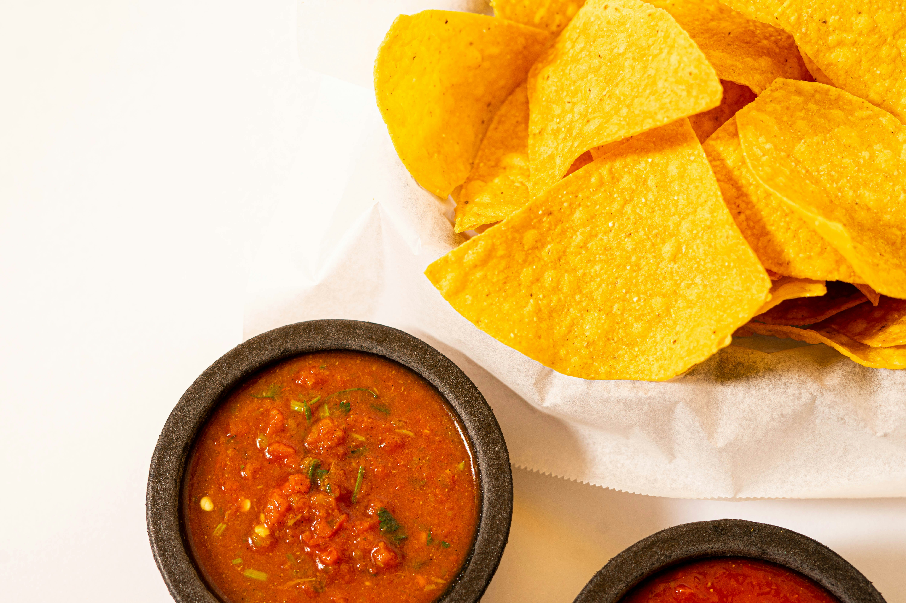

This salsa recipe can only be described as "highly adulterated" Tex-Mex, but it's still pretty tasty all the same.
I created it while living in Japan when I had a hankering for some Tostitos brand salsa. For a very brief time, Tostitos salsa was available in Japan for a relatively affordable price via Amazon, but then it disappeared from the marketplace. I created this recipe by looking at the ingredients list from a photo of the back of a jar of Tostitos salsa, adding everything to taste and more or less making things up as I went along.
It's still my go-to recipe today. It's quick and easy to make, and all of the ingredients are extremely easy to find in Japan, excepting the jalapenos, which are still pretty easy to get but which may require you to change your source and/or preferred brand from time to time.
The real keys to the flavor of this salsa are the onion powder, the vinegar, and the salt. If the salsa is too tomato-y and sweet, try adding a little more onion powder. If it lacks zing, add a little more vinegar. If the flavor just lacks oomph, add a little more salt. It's best to sample with tortilla chips instead of just the salsa alone when making flavor adjustments. And if you're not sure, just add some of the salsa to a smaller bowl and try eating it while making small adjustments with that smaller bowl so you don't ruin the whole batch. Also, the flavor will change slightly (generally, become more mild), after it's been refrigerated for a day as opposed to when it's freshly made. And on that note, be sure to refrigerate any uneaten portions and to finish the salsa within a week!
Home